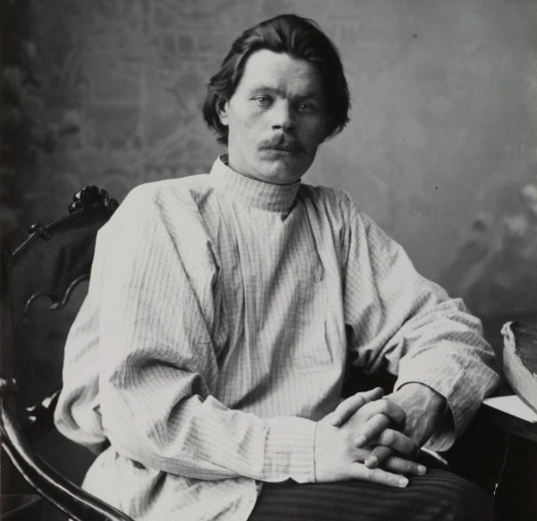

Русский язык неисчерпаемо богат и все обогащается с быстротой поражающей

О преподавателе
Здравствуйте! Меня зовут Ксения. Я дипломированный преподаватель русского языка как иностранного (РКИ).
В своей работе я опираюсь на академическую базу и современные методики. Специализируюсь на работе со взрослыми учениками (уровни А0–В2).
Я знаю, как сложно бывает иностранцам разобраться в русских падежах и видах глагола. Поэтому на моих занятиях мы разбираем сложные темы простым языком, используем интерактивные материалы и сразу отрабатываем всё в речи.
Моя главная цель — создать комфортную атмосферу, в которой вам не будет страшно ошибаться. Ведь ошибки — это неотъемлемая часть пути к свободному общению.
Образование и квалификация
В 2026 году я получила высшее образование в ГАУО МГПУ по специальности «Филология», направление «Преподавание филологических дисциплин (английского языка и русского языка как иностранного)».
В 2023 году я получила диплом о профессиональной переподготовке по направлению «Аналитика лингвообразовательных данных» от проекта «Цифровые кафедры».
В 2024 году я получила диплом о повышении квалификации по направлению «Цифровой сторителлинг».
Кому подойдут мои занятия
Я работаю со взрослыми учениками с разными целями. Занятия будут полезны, если вы:
- Переехали в Россию и хотите быстрее адаптироваться к новой среде.
- Готовитесь к экзамену (ТРКИ, поступление в ВУЗ) и вам нужна системная подготовка.
- Просто любите русскую культуру и мечтаете читать книги или смотреть фильмы в оригинале.
Методика и подготовка к экзаменам
В основе моих занятий лежит коммуникативный подход. Это значит, что мы сразу учимся использовать язык в реальных жизненных ситуациях. На уроках мы много говорим, слушаем живую речь и разбираем грамматику в контексте.
Для разнообразия и повышения мотивации мы внедряем элементы gamification (игровые механики). Кроме того, мы помогаем ученикам оценить текущий уровень по шкале CEFR и готовим к сдаче экзамена ТРКИ.
Подробнее об экзамене можно узнать в статье ТРКИ.
Ближайший экзамен можно сдать .
Готовы сделать первый шаг?
На второй странице вас ждет подробное описание того, как проходят занятия, ответы на частые вопросы и удобная форма записи на бесплатное пробное занятие.